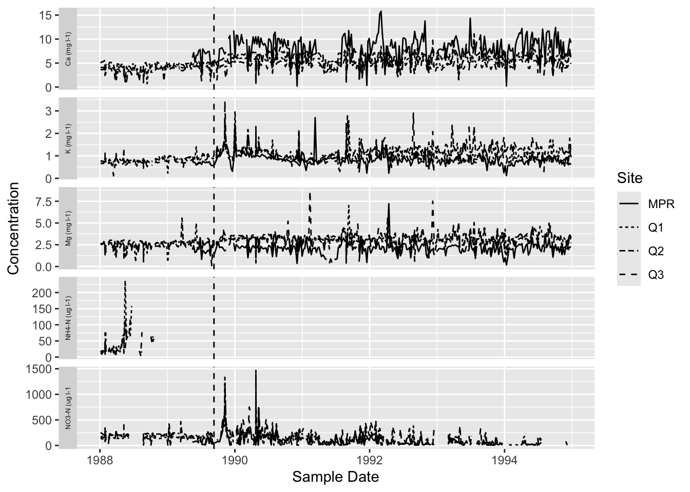

The purpose of this script is to provide direction on how to replicate figure 3 - Concentrations of potassium, nitrate-N, magnesium, calcium and ammonium-N in Bisley, Puerto Rico streams before and after Hurricane Hugo, 9-wk moving average from Schaefer et al 2000.
Author: Joaquin Sandoval
email:joaquinsandoval@ucsb.edu
Data
# Installing necessary packages. library(here)
here() starts at C:/Users/oc3an/OneDrive/Documents/MEDS/EDS-214/EDS-214_project
── Conflicts ────────────────────────────────────────── tidyverse_conflicts() ──
✖ dplyr::filter() masks stats::filter()
✖ dplyr::lag() masks stats::lag()
ℹ Use the conflicted package (<http://conflicted.r-lib.org/>) to force all conflicts to become errors
library(janitor)
Attaching package: 'janitor'
The following objects are masked from 'package:stats':
chisq.test, fisher.test
Rows: 1657 Columns: 39
── Column specification ────────────────────────────────────────────────────────
Delimiter: ","
chr (8): Sample_ID, NitrateCode, SulfateCode, NH4Code, PO4Code, TDNCode, S...
dbl (21): Code, Sample_Time, Gage_Ht, Temp, pH, Cond, Cl, NO3-N, SO4-S, Na,...
lgl (9): TDP, ChlorideCode, SodiumCode, PotassiumCode, MagnesiumCode, Calc...
date (1): Sample_Date
ℹ Use `spec()` to retrieve the full column specification for this data.
ℹ Specify the column types or set `show_col_types = FALSE` to quiet this message.
Methods
#Merge all datasets together with rbind to create a 'long' dataframe with variables stacked Q1_Q2_Q3_PRM <-rbind(Q1, Q2, Q3, PRM) #Selecting for variables that are relevant to the figure and filtering for dates between 1988-1995cleaned <- Q1_Q2_Q3_PRM |>select(sample_id, sample_date, nh4_n, ca, mg, no3_n, k) |>filter(sample_date >"1988-01-01"& sample_date <"1995-01-01")# source moving average function from script
<<<<<<< HEAD
source(here("moving_average.R"))# Adding a '9-week' moving average average column for each chemical concentration that we're interested in. cleaned$k_moving <-sapply( cleaned$sample_date, moving_average,dates = cleaned$sample_date,conc = cleaned$k,win_size_wks =9)cleaned$no3_n_moving <-sapply( cleaned$sample_date, moving_average,dates = cleaned$sample_date,conc = cleaned$no3_n,win_size_wks =9)cleaned$mg_moving <-sapply( cleaned$sample_date, moving_average,dates = cleaned$sample_date,conc = cleaned$mg,win_size_wks =9)cleaned$ca_moving <-sapply( cleaned$sample_date, moving_average,dates = cleaned$sample_date,conc = cleaned$ca,win_size_wks =9)cleaned$nh4_n_moving <-sapply( cleaned$sample_date, moving_average,dates = cleaned$sample_date,conc = cleaned$nh4_n,win_size_wks =9)# Plotting moving average of K concentrations vs year
source(here("moving_average.R"))# Adding a '9-week' moving average average column for each chemical concentration that we're interested in. cleaned$k_moving <-sapply( cleaned$sample_date, moving_average,dates = cleaned$sample_date,conc = cleaned$k,win_size_wks =9)cleaned$no3_n_moving <-sapply( cleaned$sample_date, moving_average,dates = cleaned$sample_date,conc = cleaned$no3_n,win_size_wks =9)cleaned$mg_moving <-sapply( cleaned$sample_date, moving_average,dates = cleaned$sample_date,conc = cleaned$mg,win_size_wks =9)cleaned$ca_moving <-sapply( cleaned$sample_date, moving_average,dates = cleaned$sample_date,conc = cleaned$ca,win_size_wks =9)cleaned$nh4_n_moving <-sapply( cleaned$sample_date, moving_average,dates = cleaned$sample_date,conc = cleaned$nh4_n,win_size_wks =9)# Plotting moving average of K concentrations vs year
>>>>>>> ab999ebbee9c2e00a9e67d18076f80e77eac51a4
Results
# Plotting moving average of K concentrations vs yeark_plot <-ggplot(data = cleaned, aes(x = sample_date, y = k_moving)) +geom_line(aes(linetype = sample_id)) +geom_vline(xintercept =as.Date("1989-09-10"), linetype ="solid") +xlab(" ") +ylab("K") +theme(axis.line =element_blank(),axis.text =element_blank(),axis.ticks =element_blank())k_plot
Warning: Removed 62 rows containing missing values or values outside the scale range
(`geom_line()`).

# Plotting moving average of NO3 concentrations vs yearno3_plot <-ggplot(data = cleaned, aes(x = sample_date, y = no3_n_moving)) +geom_line(aes(linetype = sample_id))+geom_vline(xintercept =as.Date("1989-09-10"), linetype ="solid") +xlab(" ") +ylab("NO3") +theme(axis.line =element_blank(), axis.text =element_blank(),axis.ticks =element_blank(),legend.position ="none")no3_plot
Warning: Removed 552 rows containing missing values or values outside the scale range
(`geom_line()`).
# Plotting moving average of Mg concentrations vs yearmg_plot <-ggplot(data = cleaned, aes(x = sample_date, y = mg_moving)) +geom_line(aes(linetype = sample_id)) +geom_vline(xintercept =as.Date("1989-09-10"), linetype ="solid") +xlab(" ") +ylab("Mg") +theme(axis.line =element_blank(),axis.text =element_blank(),axis.ticks =element_blank(),legend.position ="none")mg_plot
Warning: Removed 62 rows containing missing values or values outside the scale range
(`geom_line()`).
# Plotting moving average of Ca concentrations vs yearca_plot <-ggplot(data = cleaned, aes(x = sample_date, y = ca_moving)) +geom_line(aes(linetype = sample_id)) +geom_vline(xintercept =as.Date("1989-09-10"), linetype ="solid") +xlab(" ") +ylab("Ca") +theme(axis.line =element_blank(),axis.text =element_blank(),axis.ticks =element_blank(),legend.position ="none")ca_plot
Warning: Removed 62 rows containing missing values or values outside the scale range
(`geom_line()`).
# Plotting moving average of NH4-N concentrations vs yearnh4_plot <-ggplot(data = cleaned, aes(x = sample_date, y = nh4_n_moving)) +geom_line(aes(linetype = sample_id)) +geom_vline(xintercept =as.Date("1989-09-10"), linetype ="solid") +xlab(" ") +ylab("NH4") +theme(legend.position ="none")nh4_plot
Warning: Removed 1526 rows containing missing values or values outside the scale range
(`geom_line()`).
# Merging plots to replicate the style of figure 3.megaplot<- k_plot/ no3_plot / mg_plot / ca_plot / nh4_plot megaplot
Warning: Removed 62 rows containing missing values or values outside the scale range
(`geom_line()`).
Warning: Removed 552 rows containing missing values or values outside the scale range
(`geom_line()`).
Warning: Removed 62 rows containing missing values or values outside the scale range
(`geom_line()`).
Removed 62 rows containing missing values or values outside the scale range
(`geom_line()`).
Warning: Removed 1526 rows containing missing values or values outside the scale range
(`geom_line()`).